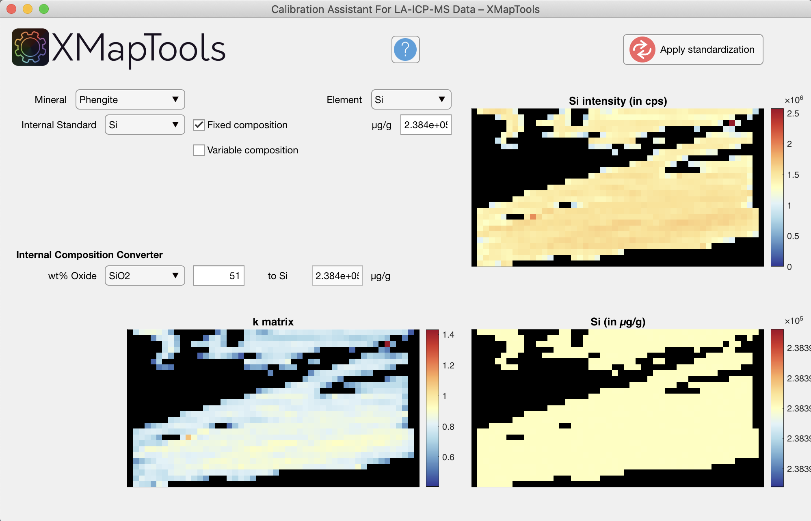
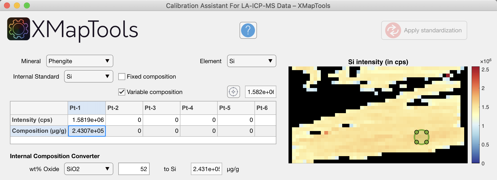
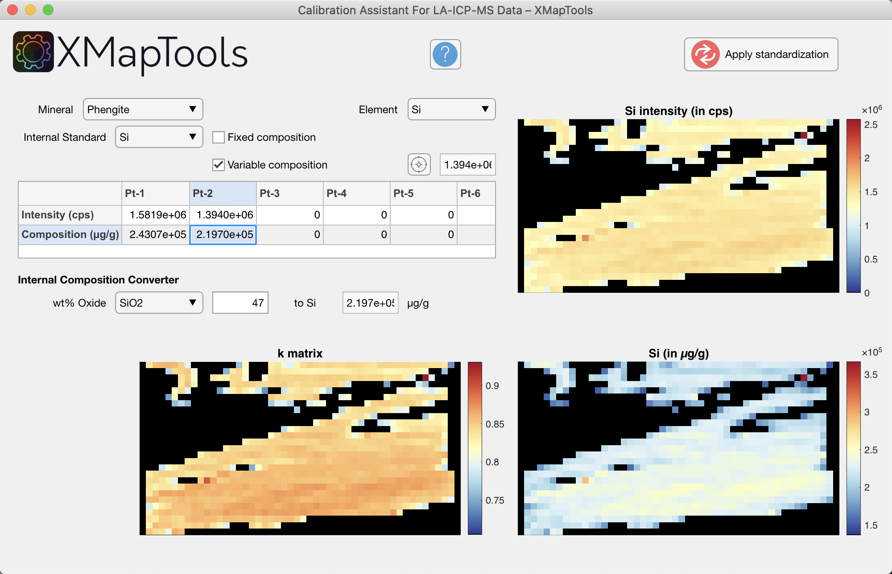

Help file version 02.12.2021 by M. Tedeschi & P. Lanari
Access XMapTools resources online
This part of XMapTools 4 is currently at level 1 of development (1, largely untested; 2, tested for a few cases; 3, tested and benchmarked; 4, publication quality).
Table of content
Step-by-step guide
This help file contains a description of the Calibration Assistant for LA-ICPMS Data which can be used to generate compositional maps from intensity data using standard maps generated by the Converter for LA-ICPMS data.
The new approach implemented in XMapTools 4 provides a module for mineral calibration based on the reference composition of an element (internal standard). Unlike other programs, the composition of the reference element can be variable in the mineral. This is work in progress, so please contact Pierre Lanari (pierre.lanari@geo.unibe.ch) if your case is not handled well by the algorithm.
This mode is valid if an element is chemically unzoned in the selected mineral and you want to use it as internal standard (e.g. SiO2 in garnet).
You can use the Internal Composition Converter tool to convert the composition of the internal standard in µg/g of element. Enter a value in oxide wt% and the converter will automatically translate this value to µg/g (as shown on the image below). Note that the value in the field for Fixed composition changes when a new conversion is performed; there is no need to copy the value from one field to the other.

Figure 1: Calibration Assistant for LA-ICPMS data. Example of internal calibration of phengite using Si as internal standard and a reference composition of SiO2 = 51 wt%. Note that the value of Si = 2.384e+05 µg/g has been automatically set in the field located in front of the item "Fixed composition". Two maps are displayed in the bottom: the k-matrix calculated using the internal standard and the calibrated map for Si expressed in µg/g.
Press the button Apply standardisation to generate the compositional maps that will be available in the category Quanti of the Primary Menu. The maps are expressed in µg/g of elements. You can convert them into wt% of oxides using the internal converter. Right-click on a the quanti file and select the option Convert. Choose the conversion in the Converter Window. Note: After converting the maps, the name of the maps can be changed (this is not done by the converter).
This mode is optimal for minerals that are zoned in all major elements (e.g. phengite). Average intensities of several ROI can be picked from the map and attributed to different compositions.
 The button Pick a ROI (circle) activate the mode to draw a ROI with a circle shape. Draw a circle on the map in a region showing a constant intensity.
The button Pick a ROI (circle) activate the mode to draw a ROI with a circle shape. Draw a circle on the map in a region showing a constant intensity.
Set the average composition in wt% of oxide in the Internal Composition Converter tool. Then click in the table on the first and second raw of Pt-1; values will be automatically added to the table.
Move the ROI to an other area, for example with lower values in intensity/composition, adjust the value for wt% of oxide and click in both lines the table to create Pt-2.
Figure 2: Calibration Assistant for LA-ICPMS data. Example of internal calibration of phengite using Si as internal standard and a variable reference composition. In this case a value of SiO2 = 52 wt% is attributed to the phengitic core (Pt-1).
Figure 3: Calibration Assistant for LA-ICPMS data. Example of internal calibration of phengite using Si as internal standard and a variable reference composition. In this case a value of SiO2 = 47 wt% is attributed to the muscovite rim Pt-2. Two maps are displayed in the bottom: the k-matrix calculated using the internal standard with variable composition and the calibrated map for Si expressed in µg/g. Note that compared to Figure 1, Si is not homogeneous throughout the mica.
Press the button Apply standardisation to generate the compositional maps that will be available in the category Quanti of the Primary Menu. The maps are expressed in µg/g of elements. You can convert them into wt% of oxides using the internal converter. Right-click on a the quanti file and select the option Convert. Choose the conversion in the Converter Window. Note: After converting the maps, the name of the maps can be changed (this is not done by the converter).